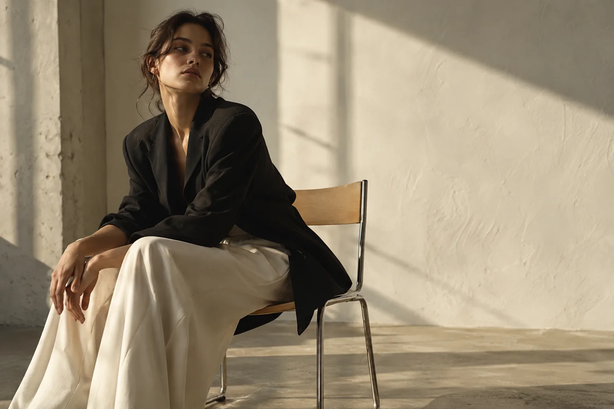
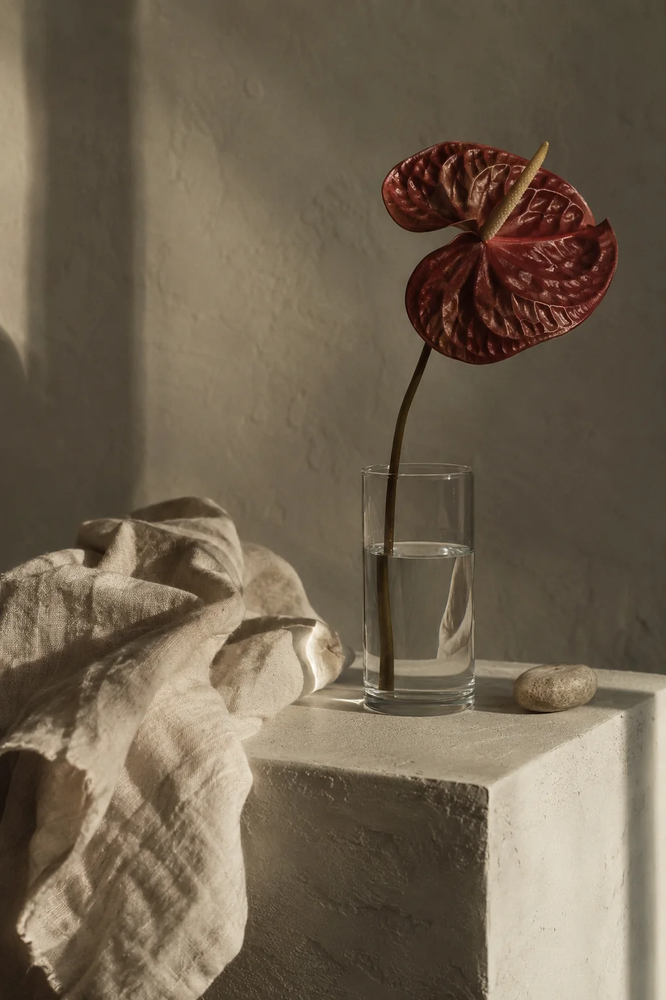
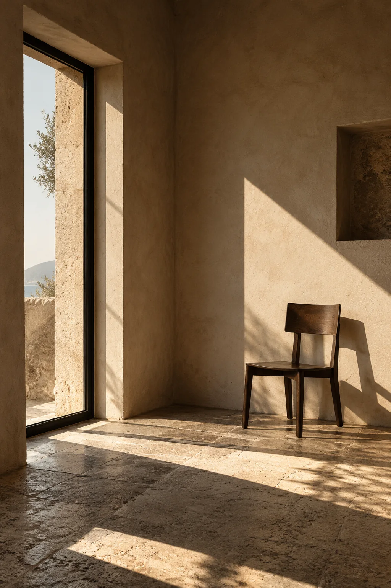
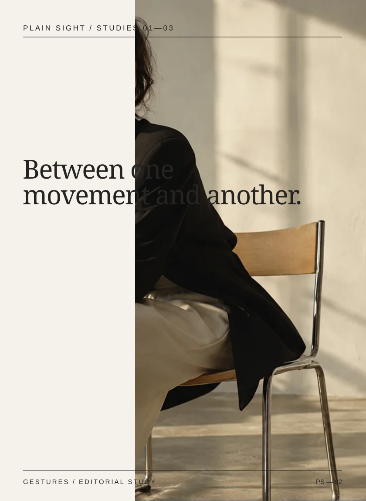
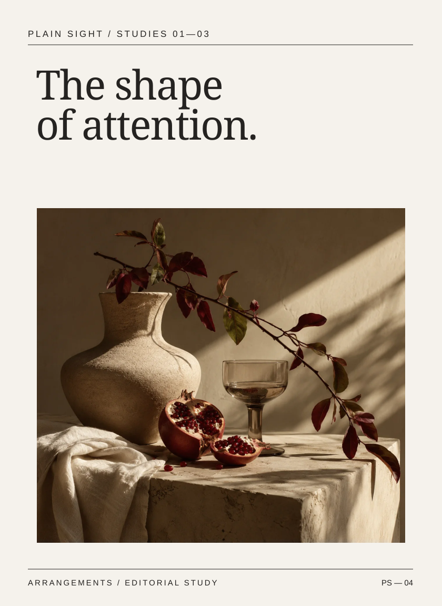
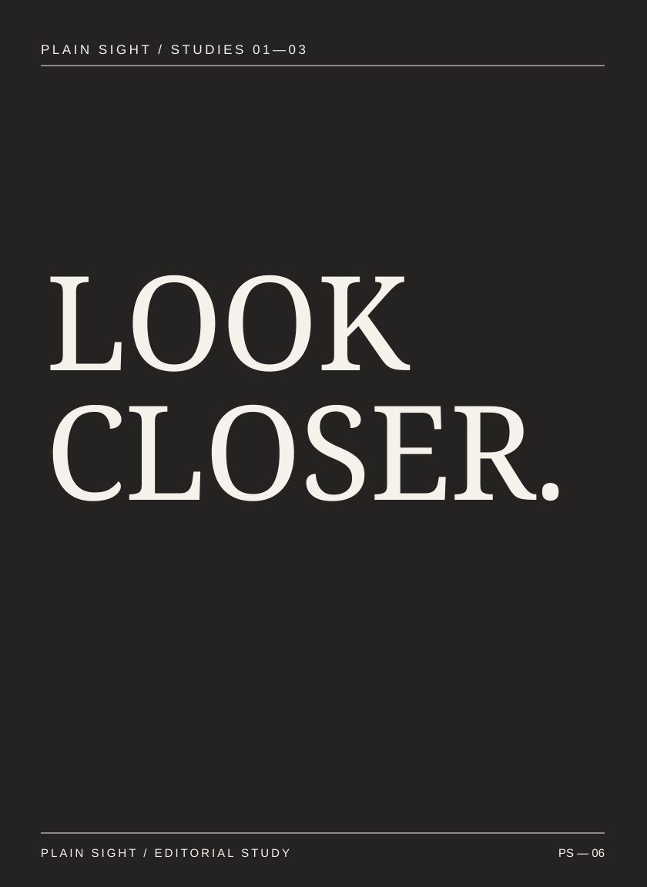
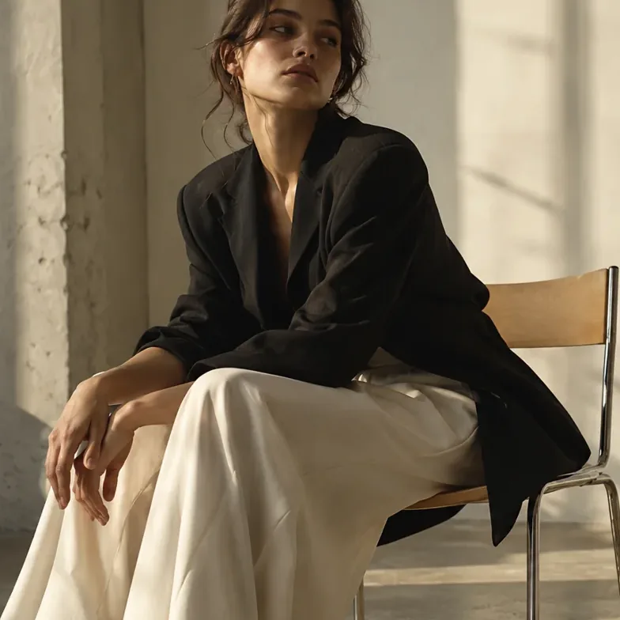
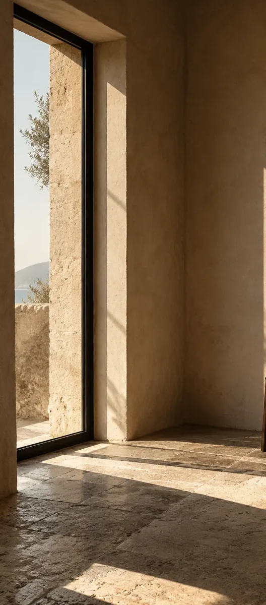

CASE STUDY / SELF-INITIATED ART DIRECTION
PLAIN
SIGHT.
A photography-led editorial identity that demonstrates visual direction from image selection to printed publication, campaign artwork and a working responsive web experience.

01 / THE ASSIGNMENT
Make looking
the subject.
The brief was to build a credible design-led image-making studio without defaulting to another product mockup. The visual identity had to work with human subjects, still-life objects and architectural spaces while preserving one coherent editorial voice.
The strategy: let photography provide the emotional range, while typography, captions, sequencing and quiet color preserve identity.
This is a self-initiated concept. Photography was AI-generated for art-direction illustration; no client, talent, commission, printed run or business outcome is implied.
02 / CREATIVE POSITIONING
A restrained visual system that makes ordinary material feel significant without over-designing it.
Different subjects.
One way of seeing.
Directional light, natural texture, decisive framing and typography that knows when to step aside.
03 / THE IMAGE WORLD
Three points
of attention.
Five original generated scenes become three distinct chapters. Additional views are acknowledged as crops rather than fictional camera exposures.



ordinary,
observed
differently.STUDIES 01—03 / 24 PAGES
04 / PRINTED MATTER
Built as
complete pages.
The 24-page publication is a real PDF, not a collection of mockup images. It has chapter openings, image pacing, selection sheets, typographic pauses and an explicit colophon.
Inspect all 24 pages ↗Inspect identity and production guide ↗
05 / SYSTEM APPLICATIONS
Art direction,
translated.
Six photo-and-type posters, a twelve-slide carousel set, six social studies, four stories, three responsive banners, stationery sources and an email composition.



06 / DESIGN TO FRONTEND
A website
with a rhythm.
Instead of standard product cards, the site uses asymmetry, intentional photo scaling, an oversized editorial hero and distinct study pages.


INTERACTION DETAILS
Design is
behavior.
Functional project filters, small-screen navigation, keyboard focus styles, accessible image descriptions, reduced-motion preferences and explicit local-only form feedback make the site more than a static art board.
The code and image assets are bundled in the project ZIP for inspection. Real browser/device review remains a separate verification step.
07 / CONCLUSION
What this
demonstrates.
PLAIN SIGHT shows how a graphic designer can keep a cross-channel system coherent without forcing every deliverable into one rigid template. Different subject matter requires different image edits, but typography, tone and hierarchy maintain a common point of view.
A commercial rollout would require sourced/licensed photographic production, actual vendor preflight, real client feedback and independently verified web QA. None are presented as complete here.